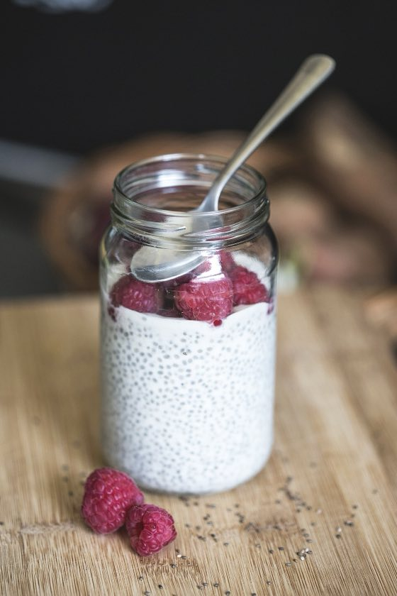

Raspberry chia jars
A pudding that makes itself while you sleep. You shake, you wait, you eat.
- 10 minutes to make
- Waits all night
- Makes 2 jars
- No knife, no oven

You need
Tick each one when it is on the table.
Tools
- 2 jars with lids
- A tablespoon and a teaspoon
- A measuring jug
Steps
- Wash your hands with soap for 20 seconds.
- Put 2 tablespoons of chia seeds into each jar.
- Pour half of the milk into each jar. Add 1 teaspoon of honey and a drop of vanilla to each one.
- Close the lids tight. Shake each jar for 10 seconds.
- Wait 10 minutes, then shake again. This stops lumps.
- Put the jars in the fridge for at least 4 hours, or all night.
- Put the raspberries on top and eat it with a spoon!